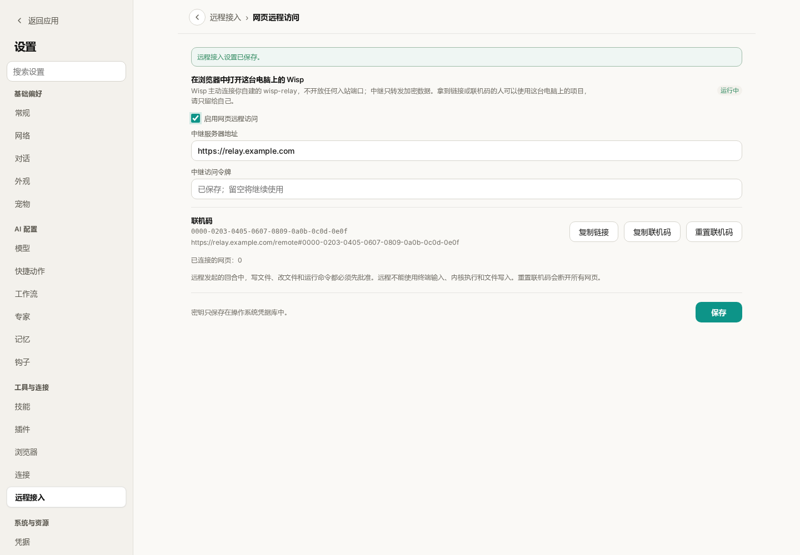
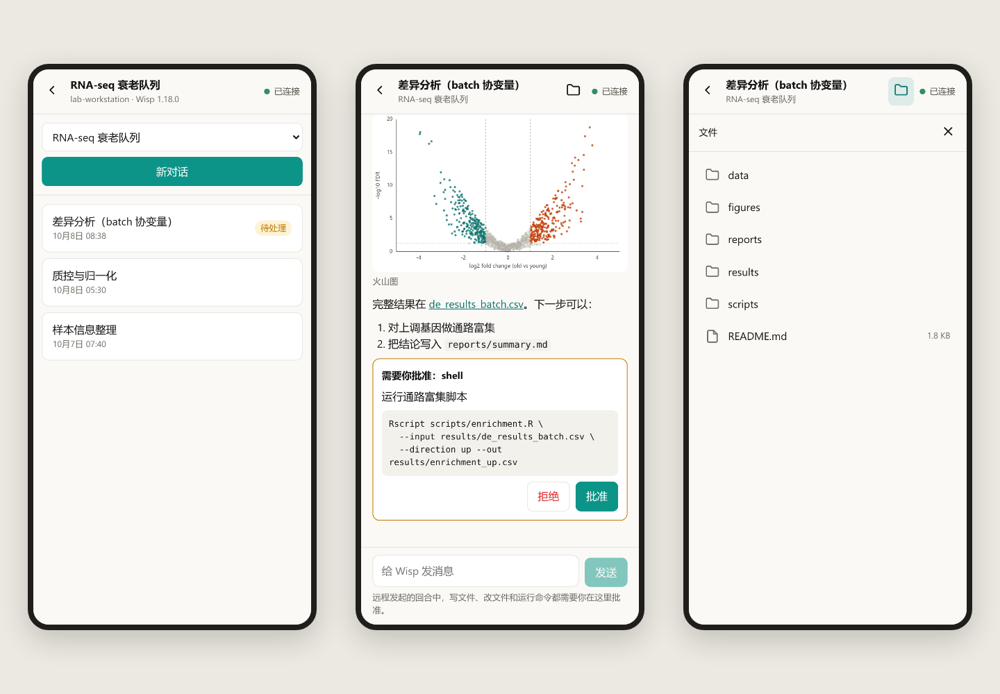
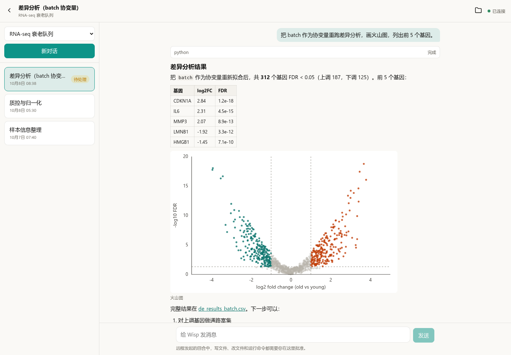
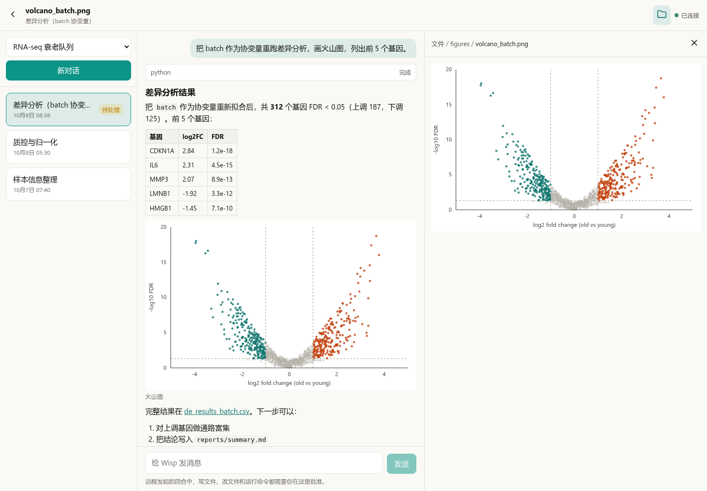
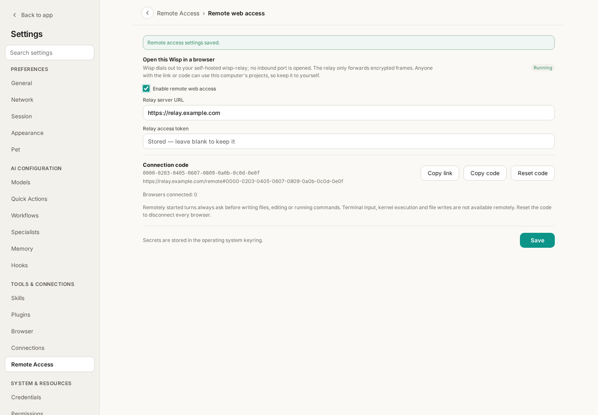
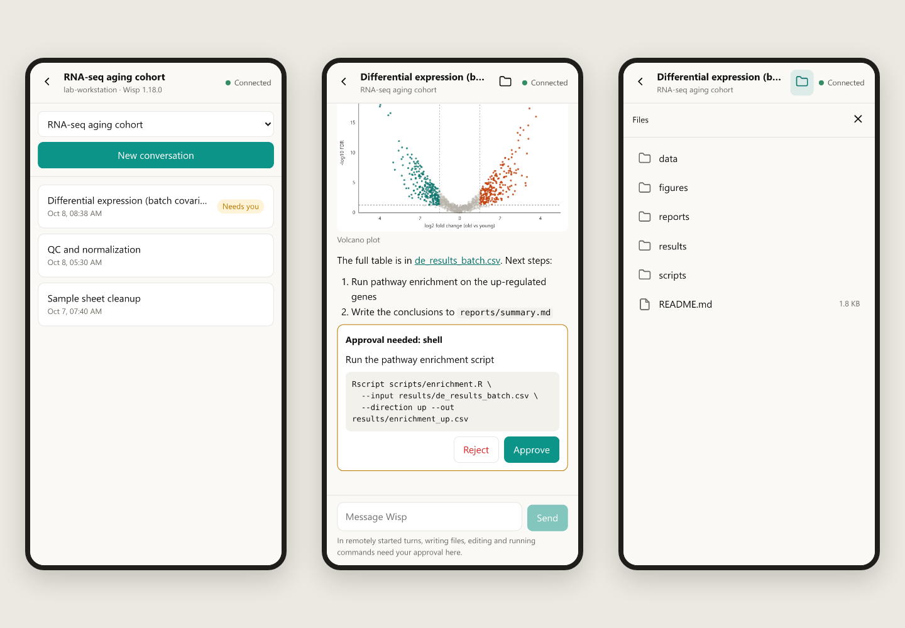
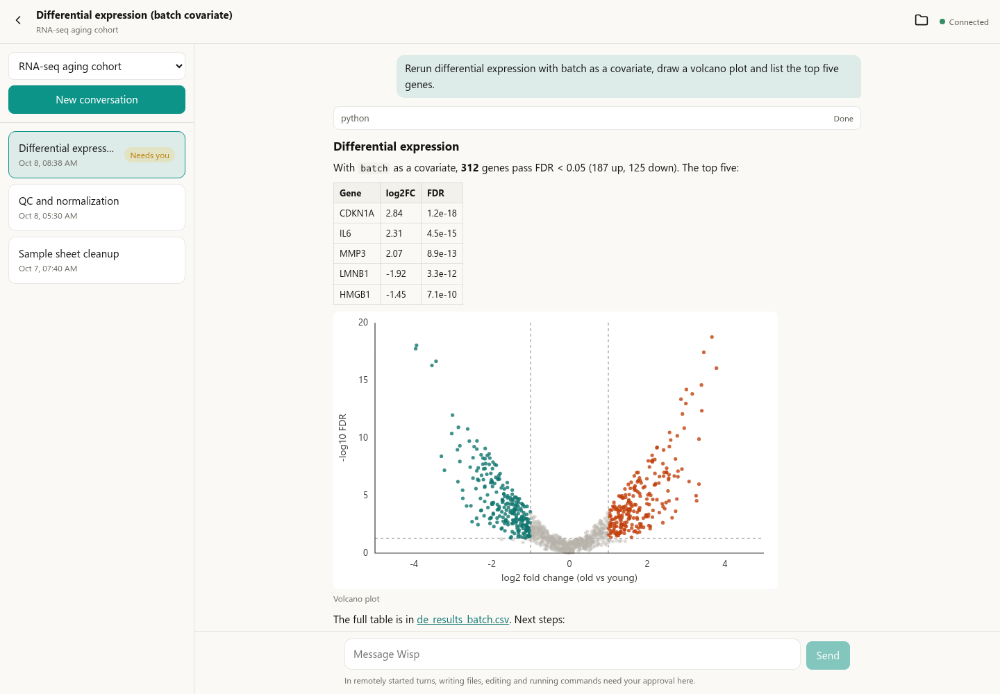
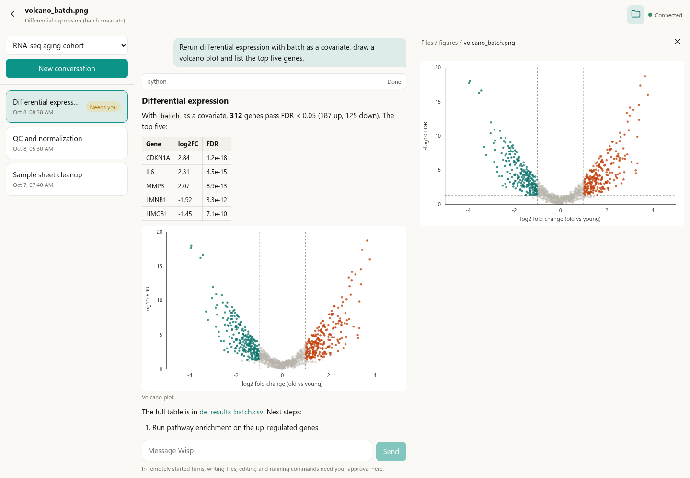

Wisp Science高级用法：用手机和浏览器远程使用 Wisp
查看原文分析任务跑在实验室的工作站上，人却在会议室、食堂，或者回家的地铁上。这时想做的往往只有三件事：看一眼跑到哪了，看看刚出的图，点一下“批准”让它继续。为这点事专程回到电脑前并不划算。
Wisp Science 的网页远程访问解决的就是这段距离：在手机或任何浏览器里打开一个网页，直接使用电脑上正在运行的 Wisp，切换项目和对话、读回复、看图、预览文件、发消息、处理审批。计算、文件和模型调用仍然发生在那台电脑上，网页只是它的一扇窗。
这篇文章从部署一台中继服务器开始，接着在桌面端开启远程访问，最后介绍手机和电脑浏览器里各能做什么，以及它刻意不做什么。
本文配图来自实际前端，项目、对话、图表和文件均为演示数据。
relay.example.com是占位域名，图中的联机码是示例值，不能用来连接任何电脑。网页远程访问在 v1.18.0 之后加入，需要更新的桌面端版本。
先认识三个角色。
手机 / 浏览器 ──HTTPS──▶ 中继服务器 ◀──主动连出── 电脑上的 Wisp
| 角色 | 在哪里 | 负责什么 |
|---|---|---|
| 桌面端 Wisp | 你的电脑或工作站 | 真正干活：运行 Agent、读写文件、调用模型 |
中继服务器 wisp-relay |
一台有域名的公网服务器 | 让网页和电脑“碰头”，只转发加密后的数据 |
| 网页 | 手机或任意浏览器 | 显示内容，发送你的指令 |
电脑是主动连出去的，不需要公网 IP，也不用在路由器上开端口。中继看不到对话内容，也拿不到联机码，它转发的每一帧都是密文。一台中继可以同时服务多台电脑，各自用自己的联机码区分。
第一步：在服务器上部署中继。
需要一台能从外网访问的服务器、一个解析到它的域名，并放行 80 和 443 端口。浏览器只允许在 HTTPS 页面里使用加密功能，所以中继前面必须有 HTTPS；下面的配置用 Caddy 自动申请和续期证书。
把这段内容保存为 compose.yaml，把 relay.example.com 换成你的域名：
services:
relay:
image: ghcr.io/xuzhougeng/wisp-relay:latest
restart: unless-stopped
environment:
WISP_RELAY_TOKEN: ${WISP_RELAY_TOKEN:?set a long random token}
volumes:
- relay-data:/data
caddy:
image: caddy:2
restart: unless-stopped
command: caddy reverse-proxy --from relay.example.com --to relay:8787
ports:
- "80:80"
- "443:443"
volumes:
- caddy-data:/data
volumes:
relay-data:
caddy-data:
然后生成访问令牌并启动：
echo "WISP_RELAY_TOKEN=$(openssl rand -hex 32)" > .env
docker compose up -d
.env 里的令牌稍后要填进桌面端，请像密码一样保管。只有持有令牌的电脑才能登记到这台中继，陌生人无法把它当作免费的隧道。
镜像同时支持 x86 和 ARM 服务器。latest 对应最新正式版；如果桌面端是从开发分支构建的，或者拉取时提示 latest: not found（该标签要等下一个正式版发布后才会出现），把镜像标签换成 :main。服务器上已经有 nginx 等反向代理，或者想自己构建镜像时，参见文末的参考文档。
第二步：在桌面端开启远程访问。
打开 设置 → 远程接入 → 网页远程访问，填写中继服务器地址（https://你的域名）和刚才的访问令牌，勾选 启用网页远程访问。

图 1：状态显示“运行中”表示电脑已经连上中继。图中的地址和联机码都是演示值；令牌保存后不会再显示在输入框里。
状态变为“运行中”后，页面会显示一个联机码和一条完整链接。点击 复制链接，把它发到自己的手机上。
- 联机码就是钥匙。拿到链接或联机码的人可以使用这台电脑上的项目，请只留给自己。
- 令牌和联机码保存在操作系统的凭据库中，不写入项目数据。
- 怀疑链接外泄时，点击 重置联机码：旧链接立即失效，已经打开的网页全部断开。
- 远程访问期间，电脑上的 Wisp 需要保持运行。
第三步：在手机上打开。
在手机浏览器里打开刚才的链接；也可以访问 https://你的域名/remote，手动输入联机码。右上角显示“已连接”就可以用了。

图 2：手机上一次显示一栏。左：一个项目下的对话列表；中：对话底部等待你处理的审批；右：这条对话所在项目的文件。
手机屏幕窄，页面一次只显示一栏，左上角的返回箭头逐级退出。浏览器自带的后退同样有效，刷新或收藏之后会回到同一条对话。
| 想做的事 | 怎么做 |
|---|---|
| 换一个项目 | 顶部的项目下拉框 |
| 换一条对话 | 对话列表；带“运行中”“待处理”标记的优先看 |
| 开一条新对话 | 列表上方的 新对话 |
| 让它继续或停下 | 在输入框发消息；运行中可以点 停止 |
| 处理审批 | 对话底部的审批卡片会显示完整的命令或改动，点 批准 或 拒绝 |
在电脑浏览器里，三栏同时展开。

图 3：屏幕够宽时，左侧是当前项目的对话，中间是对话内容。示例中的基因、数值和火山图都是演示数据。
回复按 Markdown 渲染，表格、列表、代码和链接都能正常显示，回复里的图片直接出现在对话中。打开一条已经结束的对话，它在桌面端的“待处理”标记也会一并消除。
文件夹按钮：看看它刚写出了什么。
点击右上角的文件夹按钮，右侧会打开这条对话所在项目的文件夹，可以逐级浏览。回复里指向项目文件的链接，点一下也会在这里打开。

图 4：文件面板和对话并排显示，顶部的路径可以点击返回上一级。
| 文件类型 | 网页里看到的 |
|---|---|
| 文本、代码、CSV、日志 | 文本内容；大文件只显示开头 1 MB |
| Markdown | 渲染后的文档 |
| PNG、JPG 等图片 | 缩略图，最长边 1024 像素 |
| PDF、Word、PPT、Excel | 桌面端提取出的文字，不是原始版式 |
| 其他二进制文件 | 提示无法预览，请在桌面端打开 |
文件面板是只读的，不能上传、下载、改名或删除。打开的文件夹会自动刷新，Agent 新写出的文件稍等几秒就会出现。
远程操作的安全边界。
把一台能读写文件、运行命令的电脑接到网页上，需要比本地更保守。Wisp 的做法是：
- 远程发起的回合一律先问。 从网页发出的消息，写文件、改文件和运行命令都必须经过你批准，即使桌面端平时设置为自动允许。批准只对当前这一次生效。
- 能做的事是一张短名单。 列出项目和对话、读对话、新建对话、发送、停止、审批、浏览和预览文件。终端输入、Python／R 内核执行、保存或修改文件、上传附件和 ACP 对话都不能远程使用。
- 文件内容不出电脑。 除了文本预览和图片缩略图，文件的原始内容不会发送给网页。
- 中继只见密文。 联机码放在链接的
#之后，浏览器不会把这一段发给任何服务器；数据在网页和电脑之间端到端加密。
它不是完整的客户端。
网页远程访问的定位，是人不在电脑前时的应急入口。切换模型、计划模式、运行卡片、终端、Notebook、更早的历史消息、PDF 原样渲染和文件下载，都留在桌面端。页面靠定时刷新获取进展（任务运行时约 1.5 秒一次），没有消息推送。
遇到问题时，先看这几项。
| 现象 | 先检查什么 |
|---|---|
| 页面显示“电脑离线” | 电脑上的 Wisp 是否在运行，远程访问是否仍为“运行中” |
| 桌面端迟迟连不上 | 中继地址是否以 https:// 开头，令牌是否与 .env 一致；电脑能否直接访问该域名（桌面端连接中继暂不支持代理） |
| 提示联机码格式不正确 | 联机码是 32 位十六进制；重置之后要使用新的链接 |
| 提示必须使用 HTTPS | 用 https:// 打开页面；只有 localhost 允许 HTTP |
| 发送失败 | 输入的内容会保留；先刷新确认上一条是否已经送达，再决定是否重发 |
第一次使用可以只完成四件事：启动中继、在桌面端看到“运行中”、用手机打开链接、在手机上批准一次操作。确认这条链路通了，再把它当作日常的远程入口。
项目与下载：Wisp Science
部署细节（nginx 反向代理、自行构建镜像、数据备份）和完整的安全模型见网页远程访问参考文档。本文依据撰写时的项目实现整理，不同版本的界面文字可能略有差异。
The analysis is running on the lab workstation, and you are in a meeting room, at lunch, or on the way home. What you want is usually three small things: see how far it got, look at the figure it just produced, and press Approve so it can continue. None of that is worth a trip back to the computer.
Remote web access in Wisp Science covers that distance. You open a web page on a phone or in any browser and use the Wisp that is running on your computer: switch projects and conversations, read replies, look at figures, preview files, send messages and answer approval requests. Computation, files and model calls stay on that computer; the page is a window onto it.
This tutorial deploys a relay server, turns remote access on in the desktop app, and then shows what the page does on a phone and in a desktop browser, and what it deliberately leaves out.
Screenshots show the real frontend in English with demonstration projects, conversations, figures and files.
relay.example.comis a placeholder domain, and the connection code in the screenshots is an example that connects to nothing. Remote web access was added after v1.18.0 and needs a newer desktop version.
Meet the three parts first.
phone / browser ──HTTPS──▶ relay server ◀──dials out── Wisp on your computer
| Part | Where it runs | What it does |
|---|---|---|
| Desktop Wisp | Your computer or workstation | The actual work: runs the agent, reads and writes files, calls models |
Relay server wisp-relay |
A public server with a domain | Lets the page and the computer meet; forwards encrypted data only |
| Web page | A phone or any browser | Shows content and sends your instructions |
The computer dials out, so it needs no public IP address and no port opened on a router. The relay cannot read conversations and never receives the connection code: every frame it forwards is ciphertext. One relay can serve several computers, each told apart by its own code.
Step 1: deploy the relay on a server.
You need a server reachable from the internet, a domain that points to it, and ports 80 and 443 open. Browsers only allow the page's encryption on HTTPS pages, so the relay must sit behind HTTPS; the setup below uses Caddy to obtain and renew the certificate automatically.
Save this as compose.yaml and replace relay.example.com with your domain:
services:
relay:
image: ghcr.io/xuzhougeng/wisp-relay:latest
restart: unless-stopped
environment:
WISP_RELAY_TOKEN: ${WISP_RELAY_TOKEN:?set a long random token}
volumes:
- relay-data:/data
caddy:
image: caddy:2
restart: unless-stopped
command: caddy reverse-proxy --from relay.example.com --to relay:8787
ports:
- "80:80"
- "443:443"
volumes:
- caddy-data:/data
volumes:
relay-data:
caddy-data:
Then create the access token and start it:
echo "WISP_RELAY_TOKEN=$(openssl rand -hex 32)" > .env
docker compose up -d
The token in .env goes into the desktop app next; treat it like a password. Only a computer that holds the token can register with this relay, so strangers cannot use it as a free tunnel.
The image runs on both x86 and ARM servers. latest is the newest release; if your desktop app was built from the development branch, or the pull fails with latest: not found (the tag appears with the next release), change the image tag to :main. If the server already runs a reverse proxy such as nginx, or you want to build the image yourself, see the reference linked at the end.
Step 2: turn on remote access in the desktop app.
Open Settings → Remote Access → Remote web access, enter the relay server URL (https://your-domain) and the access token from the previous step, then check Enable remote web access.

Figure 1: “Running” means the computer has reached the relay. The URL and connection code are demonstration values; a saved token is never shown in the field again.
Once the state reads “Running”, the page shows a connection code and a complete link. Press Copy link and send it to your own phone.
- The connection code is the key. Anyone with the link or the code can use this computer's projects, so keep it to yourself.
- The token and the code are stored in the operating system's credential store, not in project data.
- If the link may have leaked, press Reset code: the old link stops working at once and every open page is disconnected.
- Wisp has to keep running on the computer while you use it remotely.
Step 3: open it on your phone.
Open the link in the phone's browser, or go to https://your-domain/remote and type the code. When the top right corner says “Connected”, it is ready.

Figure 2: A phone shows one pane at a time. Left: the conversations of one project. Middle: an approval waiting at the end of a conversation. Right: the files of that conversation's project.
On a narrow screen the page shows one pane at a time, and the back arrow at the top left steps out of it. The browser's own Back button works too, and a reload or a bookmark returns to the same conversation.
| To do this | Use |
|---|---|
| Switch project | The project picker at the top |
| Switch conversation | The conversation list; look at rows marked “Running” or “Needs you” first |
| Start a conversation | New conversation above the list |
| Continue or stop | Send a message in the composer; press Stop while a turn is running |
| Answer an approval | The card at the end of the conversation shows the full command or change; press Approve or Reject |
In a desktop browser, all three panes are open.

Figure 3: On a wide screen the project's conversations are on the left and the conversation in the middle. The genes, numbers and volcano plot are demonstration data.
Replies are rendered as Markdown, so tables, lists, code and links look as they should, and pictures in a reply appear inline. Opening a finished conversation here also clears its “Needs you” mark on the desktop.
The folder button: see what it just wrote.
Press the folder button at the top right to open the project folder of this conversation on the right and browse into it. A link in a reply that points to a project file opens here as well.

Figure 4: The files pane sits beside the conversation. The path at its top is clickable and leads back up.
| File type | What the page shows |
|---|---|
| Text, code, CSV, logs | The text; only the first 1 MB of a large file |
| Markdown | The rendered document |
| PNG, JPG and other images | A thumbnail, at most 1024 pixels on its longer side |
| PDF, Word, PowerPoint, Excel | The text the desktop extracts, not the original layout |
| Other binary files | A note that it cannot be previewed; open it on the desktop |
The files pane is read-only: nothing can be uploaded, downloaded, renamed or deleted. An open folder refreshes by itself, so a file the agent has just written appears after a few seconds.
The safety boundary of remote use.
Connecting a computer that reads and writes files and runs commands to a web page calls for more caution than local use. This is what Wisp does:
- Remotely started turns always ask. For a message sent from the page, writing files, editing and running commands all need your approval, even if the desktop normally allows them automatically. An approval applies to that one request only.
- What the page can do is a short list. List projects and conversations, read a conversation, start one, send, stop, approve, and browse and preview files. Terminal input, Python/R kernel execution, saving or changing files, attachments and ACP conversations are not available remotely.
- File contents stay on the computer. Apart from text previews and image thumbnails, the original contents of a file are never sent to the page.
- The relay only sees ciphertext. The connection code sits after the
#in the link, a part browsers never send to any server; data is encrypted end to end between the page and the computer.
It is not a full client.
Remote web access is the fallback for when you are away from the computer. Model switching, plan mode, run cards, the terminal, notebooks, earlier transcript pages, PDFs in their original layout and file downloads all stay on the desktop. The page learns about progress by refreshing on a timer (about every 1.5 seconds while a turn runs); there are no push notifications.
When something goes wrong, check these first.
| Symptom | Check first |
|---|---|
| The page says “Computer offline” | Whether Wisp is running on the computer and remote access still reads “Running” |
| The desktop never connects | Whether the relay URL starts with https:// and the token matches .env; whether the computer can reach the domain directly (the desktop's connection to the relay does not use a proxy yet) |
| “Invalid code” | The code is 32 hexadecimal digits; after a reset, use the new link |
| A message about HTTPS | Open the page over https://; HTTP is allowed only on localhost |
| A message fails to send | Your text is kept; reload to see whether the previous one arrived before sending again |
For a first run, four things are enough: start the relay, see “Running” on the desktop, open the link on your phone, and approve one request from the phone. Once that path works, use it as your everyday remote entry.
Project and downloads: Wisp Science
Keep reading: Research Assistant · Server Environment Setup · Quick Start
Deployment details (an nginx reverse proxy, building the image yourself, backing up data) and the full security model are in the remote web access reference. This tutorial reflects the implementation when written; labels may vary by version.